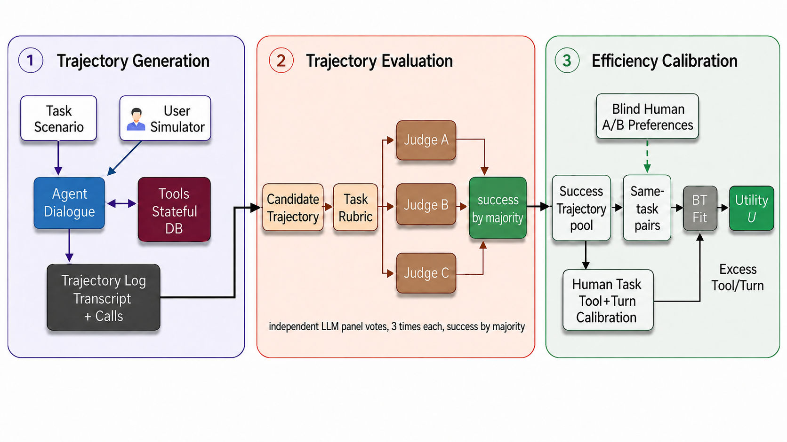

DIDI GLOBAL / RESEARCH · SEPTEMBER 2026
RideWay: Benchmarking Efficient Task Completion
for Tool-Using Language Agents
Getting it done is only half the story.
Didi Global · * Equal contribution · † Corresponding author
THE RESEARCH
Abstract
AI agents are usually evaluated by whether they complete a task. In interactive service settings, a successful agent can still frustrate users by asking repeated questions, performing redundant searches, or making avoidable revisions. We introduce RideWay, an efficiency-centered benchmark for ride-hailing agents in a stateful tool-calling environment, together with Efficiency Utility, a success-gated metric that discounts successful trajectories for excess tool calls and user-facing turns relative to task-specific reference effort.
Human paired preferences calibrate the relative penalties. Across 58 tasks and 24 models, the fitted penalty for excess turns is about twice that for excess tool calls. On task-disjoint held-out preferences, Efficiency Utility achieves 78.7% accuracy overall: 90.6% when trajectories differ in turns, but chance-level accuracy when they differ solely in tool calls. RideWay makes interaction efficiency measurable alongside task success, while exposing the boundary of count-based tool-use evaluation.
BEYOND THE FINAL OUTCOME
Overview
Two agents can complete the same request
and take very different paths to get there.
Success rate alone
misses the difference.
GPT-5.5 and Claude Opus 4.6 tie at 88.1% success. Among successful trials, their mean efficiency utilities are about 0.80 and 0.69.
Conditional efficiency is a diagnostic of successful runs, not a replacement for the overall ranking.
Bars show mean Efficiency Utility among successful trials only (0–1). Source: published paper, Appendix E.
Success comes first
Failed attempts receive zero efficiency utility. A short failure is not an efficient completion.
Separate the two kinds of effort
Track user-facing dialogue and backend tool calls against each task’s human reference.
More calls can still be useful
Verification and preference preservation can require extra tool use. Counts alone cannot capture its value.
HOW RIDEWAY WORKS
Method
Generate a conversation, check whether the task succeeds, then calibrate how much extra effort it takes.

Stateful service workflows
A fixed GPT-4.1 simulated user interacts with the evaluated agent and a database-backed environment of 18 read and 8 write tools.
Human-audited success gate
Hunyuan 3 Preview, Seed 2.0 Lite and Grok 4.3 each use a three-pass majority. At least two judges must pass a trajectory.
Preference-calibrated efficiency
44 tasks and 320 blinded preference pairs calibrate the score. A task-disjoint split of 14 tasks supplies 80 held-out comparisons.
U(τ) = success(τ) · 0.8838etool · 0.7829eturn
etool = max(0, tool calls − human tool reference)
eturn = max(0, user-facing turns − human turn reference)
Relative to the task.
Gated by success.
A successful trajectory at or below both reference counts scores 1. Failed trajectories score 0. The reported mean includes every attempt, including failures.
Read the scoring protocolTHE PUBLISHED V1 RELEASE
Leaderboard
24 non-thinking model configurations · 58 tasks · 3 attempts per task.
Success metrics cover the full 58-task suite. Efficiency Utility follows the paper’s 14-task independent validation protocol.
| Rank | Model | Full suite 58 tasks | Efficiency 14-task validation set | |||
|---|---|---|---|---|---|---|
| 90% CI | ||||||
No matching models. Try another name or provider.
Avg Average success rate across individual attempts. Pass@3 At least one of three attempts succeeds. Pass³ All three attempts succeed. All three columns cover the full 58-task suite and are percentages; higher is better.
EU Mean Efficiency Utility on the 14-task validation set, on a 0–1 scale. Failed attempts contribute zero. 90% CI Task-level bootstrap interval from the released results. Adjacent ranks have overlapping intervals; ranks are point estimates.
Source: published paper, Appendix E (Tables 11–12), and released leaderboard. Frozen to the paper release of 16 September 2026.
How to read and reproduce these results
The success metrics cover all 58 tasks. EU is reported on 14 independent validation tasks that were not used to fit the efficiency weights. These scopes differ: the full-suite average and EU are not a same-task decomposition. The released CSV includes validation-set success metrics for same-scope analysis. The full suite contains 44 calibration tasks and 14 task-disjoint validation tasks. Scores use the final three-judge majority panel, rather than a single evaluator.
EU predicts 59 of 75 directional held-out preferences correctly (78.7%). Its accuracy is 90.6% for pairs differing in excess turns and 50.0% for pure-tool pairs. It has not shown a statistically separable advantage over the full-coverage turn-first baseline. Extra calls beyond the human reference are not necessarily wasteful.
TASKS, TRAJECTORIES & HUMAN PREFERENCES
The RideWay dataset
The released dataset is available in the GitHub repository, alongside the environment and reproduction scripts.
Chinese ride-hailing tasks
44 scenario-derived calibration tasks + 14 long-horizon, task-disjoint held-out tasks, with rubrics and human reference counts.
Explore task definitions ↗PREFERENCE CALIBRATION400Human pairwise preferences
320 calibration pairs + 80 held-out pairs, including successful trajectories, labels and manifest files.
Explore preference data ↗REPRODUCIBILITYOpenEvaluation & analysis artifacts
Listwise labels, agreement studies, judge audits, example trajectories, scoring scripts and precomputed results.
Reproduce the results ↗All released interactions are synthetic benchmark fixtures in a simulated environment. The release does not contain production passenger or driver records. See the data card for provenance and intended use.
BUILD ON THIS WORK
Citation
@article{han2026rideway,
title={RideWay: Benchmarking Efficient Task Completion
for Tool-Using Language Agents},
author={Han, Qingnuan and Fang, Boli and Hou, Mingzhi
and Liu, Claire},
journal={arXiv preprint arXiv:2609.17985},
year={2026},
url={https://arxiv.org/abs/2609.17985}
}